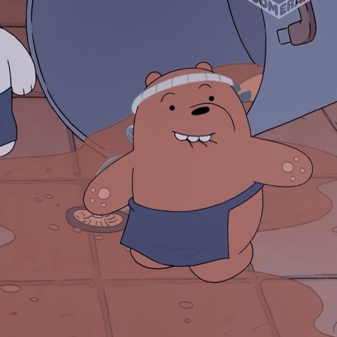
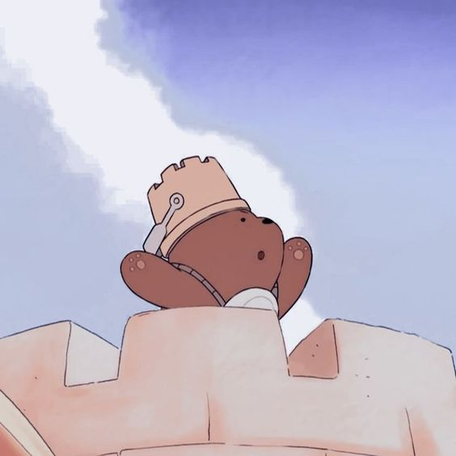
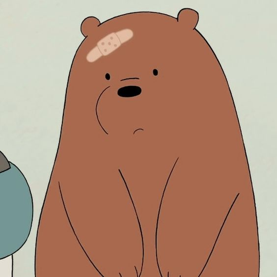

Pardo é o urso que está sempre no topo dos ursos.
Ele é aquele que age como o líder.
Ele é o único que se destaca e apresenta bons exemplos para os outros ursos, que na maioria das vezes são péssimas ideias.
Ele é o urso que fica localizado no topo da "Pilha de Ursos".
Ele se preocupa muito em fazer amigos.
Ele gosta de salmão.
De acordo com ele, 41 é "o número mais perverso de todos".
Ele é o irmão mais velho.
Ele consegue comer muita comida em pouco tempo.
Ele parece saber dirigir carros.


